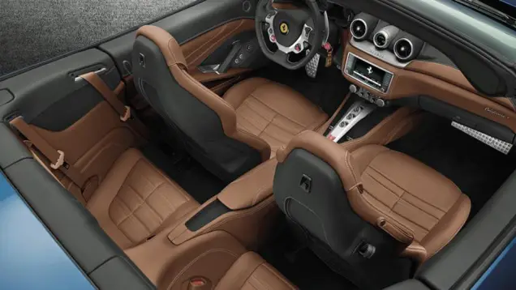

Clique no Modelo Desejado
Ferrari

Especificações
Aston Martins DBS


| Produção | 2007 - 2012 |
| Fabricante | Aston Martin |
| Montagem | Gaydon, Inglaterra |
| Classe | Gran turismo |
| Carroceria | 2 portas coupé 2 portas conversível |
| Motor | 5.935 L V12 517 cv |
| Plataforma | Aston Martin VH |
| Transmissão | 6 manual 6 automáticas (opcional) |
| Layout | Tração traseira, motor dianteiro |
| Modelos relacionados | Aston Martin DBS Volante |
| Comprimento | 4 722 mm (4,7 m) |
| Entre-eixos | 2 741 mm (2,7 m) |
| Largura | 1 905 mm (1,9 m) |
| Altura | 1 280 mm (1,3 m) |
| Peso | 1 695 kg (1,7 t) |
| Consumo | 13 L/100km estrada 20 L/100km cidade |
Mercedes Benz A200
| Motorização | 1.3 |
| Combustível | Gasolina |
| Potência (cv) | 163 |
| Torque (kgf.m) | 25,49 |
| Velocidade Máxima (km/h) | 230 |
| Tempo 0-100 (s) | 8,1 |
| Consumo cidade (km/l) | 11,3 |
| Consumo estrada (km/l) | 14,1 |
| Câmbio | dupla embreagem man.sequ.com modo auto de 7 marchas |
| Tração | dianteira |
| Direção | elétrica |
| Suspensão dianteira | Suspensão tipo McPherson e dianteira com barra estabilizadora, roda tipo independente e molas helicoidal. |
| Suspensão traseira | Suspensão tipo eixo de torção, roda tipo semi-independente e molas helicoidal. |
| Freios | N/D |
| Altura (mm) | 1.446 |
| Largura (mm) | 1.796 |
| Comprimento (mm) | 4.549 |
| Peso (Kg) | 1.385 |
| Tanque (L) | 43 |
| Entre-eixos (mm) | 2.729 |
| Porta-Malas (L) | 430 |
| Ocupantes | 5 |
| airbag motorista |
| alarme |
| freios ABS |
| airbag passageiro |
| airbag lateral |
| controle de tração |
| distribuição eletrônica de frenagem |
| ar-condicionado |
| travas elétricas |
| ar-quente |
| piloto automático |
| volante com regulagem de altura |
| trio eletrico |
| Som |
| cd player |
| cd player com MP3 |
| entrada USB |
| rádio FM/AM |
| Kit Multimídia.1 |
| bancos de couro. |
| ajuste de altura. |
| ajuste elétrico. |
| vidros elétricos dianteiros. |
| desemb. traseiro. |
| teto solar. |
| vidros elétricos traseiros |
| computador de bordo |
| Sensor de farol |
| Farol de neblina |
Lamborghini URUS
| Motor | V 8 |
| Código de Motor | - |
| Combustível | Gasolina |
| Alimentação | direct injection |
| Lubrificação | See oil information |
| Líquido de Refrigeração | - |
| Disposição | Longitudinal |
| Posição Instalação do Motor | Frente |
| Cilindrada | 3996 cm3 / 243.9 cu-in |
| Diâmetro dos cilindros x Curso dos pistões | x 86 mm 3.39 x 3.39 inches |
| Válvulas | 32 Válvulas |
| Aspiração | Turbo |
| Potência | PS / 641 HP / 478 kW @ 6000 rpm |
| Torque | Nm / 626 lb-ft @ 2250 rpm |
| Tração | AWD |
| Câmbio | 8 marchas Dualclutch Automatic Câmbio |
| Consumos - Misto | 12.3 L/100 Km 23 MPG UK 19 MPG US |
| Consumos - Extra-Urbano | 9.7 L/100 Km 29 MPG UK 24 MPG US |
| Consumos - Urbano | 16.7 L/100 Km 17 MPG UK 14 MPG US |
| Autonomia | 691 Km / 429 miles |
| Volume do depósito / tanque de combustível | 85 L 22.5 US gallons 18.7 UK gallons |
| Emissões de CO2 | 279 g/Km (Lamborghini) |
| Velocidade Máxima | 305 Km/h / 190 Mph |
| Aceleração 0 aos 100 km/h | 3.6 s |
| Tipo de Carroceria / Configuração | SUV / TT |
| Num. de Portas | 5 |
| Distância entre Eixos | 300.3 cm / 118.23 in |
| Comprimento | 511.2 cm / 201.26 in |
| Largura | 201.6 cm / 79.37 in |
| Altura | 163.8 cm / 64.49 in |
| Altura livre | 25 cm / 9.84 in |
| Num. de Lugares | 5 |
| Coeficiente aerodinâmico (Cx) | - |
| Freios dianteiros | Discos Ventilados (440 mm / 17.32 in) |
| Freios traseiras | Discos Ventilados (370 mm / 14.57 in) |
| Pneus da Frente | 285/45 R21 |
| Pneus de Trás | 315/40 R21 |
| Peso | 2200 Kg / 4850 lbs |
| Relação Peso/Potência | 3.4 kg/hp |
| Volume do Porta-malas | 574-616 L / - cu-ft |
| Suspensão da Frente | Independent, Coil springs |
| Suspensão de Trás | Independent, Coil springs |